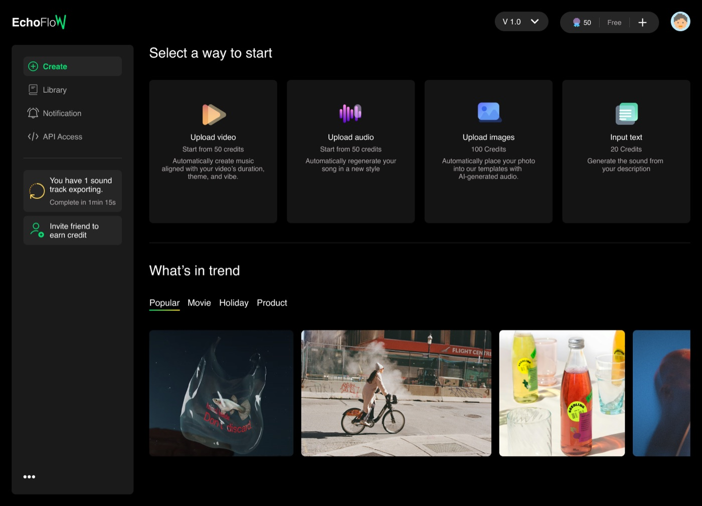

01
Flow design
Four media types, four different flows
- The default
- One unified workflow for everything. It was the simplest thing to build.
- Why I pushed back
- A video, a song, a set of photos and a sentence are very different starting points. One shared form means asking questions that don’t apply and hiding the ones that do.
- What I did
- Each media type gets its own steps and its own guidance, all inside one visual system so it still feels like a single product.
- Video
- Audio
- Images
- Text
